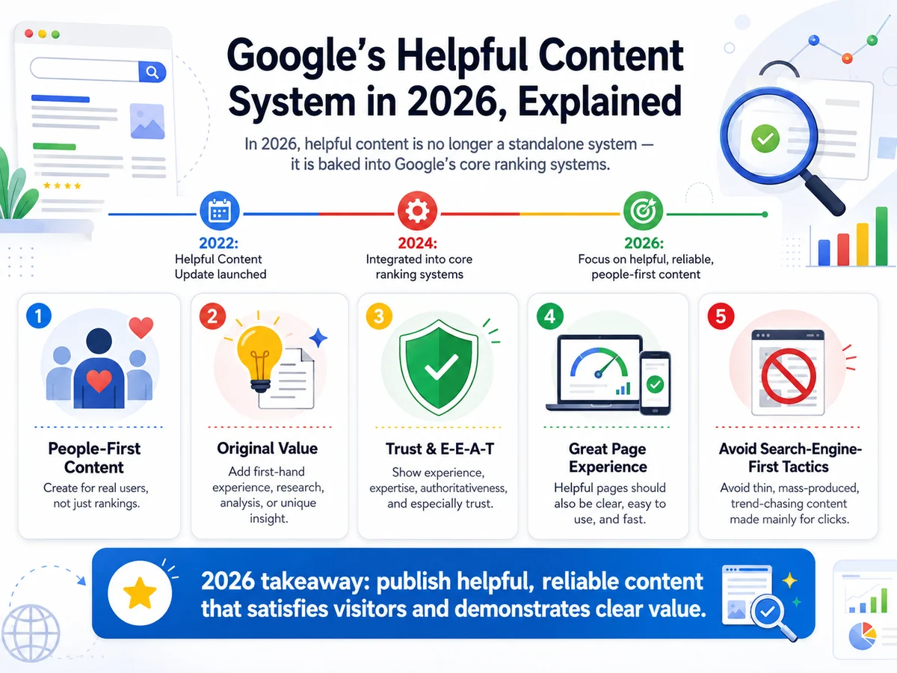

Google's Helpful Content system in 2026, explained
Google's Helpful Content system is no longer a separate update you can track on a calendar. It's woven into the core ranking algorithm — which changes what "fixing" it actually looks like.
When Google first named the Helpful Content system in 2022, many SEOs treated it as a one-off filter — something you could wait out or recover from in a single update cycle. That framing was always a bit off, and by 2026 it's completely obsolete. The signal is now part of Google's core ranking infrastructure. It evaluates continuously, it applies at the site level, and it is explicitly designed to depress the rankings of good pages that share a domain with lots of low-value ones. Understanding that distinction is the difference between a content audit that moves the needle and one that doesn't.
What "people-first" actually means in practice
Google's public guidance centres on a simple test: was this page written primarily for a person looking for information, or was it written primarily to appear in search results? The second category includes content that covers a topic only because it has search volume, content that mimics a format (listicle, FAQ, how-to) without any genuine expertise behind it, and content that answers a question the author has never actually thought about first-hand.
In practice, the signal is looking for demonstrated experience and expertise. A product review that mentions what it felt like to use the thing. A tutorial that flags the step where most people get stuck, because the author has been through it. A comparison that gives a real recommendation rather than sitting on the fence to avoid losing any audience segment. These details are hard to fake at scale and relatively easy to include if you genuinely know your subject.
- Satisfy the searcher, not just the query. A page should leave the reader better off than when they arrived — not send them back to the results page to find a more complete answer.
- Demonstrate first-hand knowledge. References to real situations, real outcomes, and honest caveats are the kind of detail that scales up the credibility signals Google is looking for.
- Match the depth to the intent. A short, direct answer is often more helpful than a padded 2,000-word article. Length is not a proxy for quality.
- Keep your site focused. The system evaluates a site's overall content posture. A niche authority site carries more weight than a broad-topic site where only some content reflects genuine expertise.
AI-generated content: what's actually allowed
Google has been clear that AI use is not the issue — production method is not what's being measured. The question is always whether the output is helpful, accurate, and demonstrates real expertise. AI drafts that are reviewed, fact-checked, and meaningfully improved by someone who actually knows the subject are fine. AI content published at volume without that review layer is precisely what the system was built to catch.
From what we see in client audits, the problem rarely comes from a single AI article that slipped through unchecked. It comes from campaigns that used AI to hit a publishing quota, where the resulting pages are structurally similar, share the same thin expertise signals, and crowd out the genuinely good content on the same domain. The fix is not to delete the AI — it's to rebuild the editorial process so that AI accelerates the research and drafting, while a named author with real credentials owns the final output.
Named authorship matters here. Bylines linked to an author page with verifiable credentials give Google more to evaluate. Anonymous content or a generic "staff writer" attribution doesn't surface the expertise Google needs to see, even if the content itself is solid.
What to actually do: a site-level content audit
Because the system operates at the site level, the most impactful move is almost never "improve this one page." It's to take stock of the entire content catalogue and make a deliberate decision about every page.
Start by identifying which pages have no meaningful search impressions and no backlinks after at least six months live. These are candidates for consolidation (merging with a related, stronger page), improvement (adding first-hand detail and a named author), or removal with a proper redirect. The goal is to raise the signal-to-noise ratio for your domain, so Google is evaluating your best work, not averaging it across dozens of thin pages.
Next, look at the pages that rank but have high bounce rates and low engagement time. These often signal a mismatch between what the title promises and what the page delivers — or a page that answers a question shallowly when searchers want depth. Both are fixable with targeted rewrites, not wholesale replacements.
Finally, audit your authorship and About pages. Clear information about who writes for you, what their qualifications are, and how your editorial process works supports E-E-A-T broadly, not just Helpful Content signals. Treat it as infrastructure, not an afterthought.
Frequently asked questions
If I improve my thin pages, how quickly will rankings recover?
There is no guaranteed timeline, but in our experience meaningful movement typically appears within one to three core update cycles after the improvements are indexed. The Helpful Content signal updates continuously, so recovery can happen outside named update windows — but auditing, fixing, and re-indexing all take time. Expect months, not weeks.
Does using AI to write content automatically hurt my rankings?
No. Google's guidance is explicit: the production method is not the test. What matters is whether the content demonstrates real expertise, is accurate, and genuinely helps the reader. AI content that goes through a proper expert review and is published under a named, credible author is treated the same as any other content.
Should I delete thin pages or improve them?
It depends. If a page covers a topic that your site should legitimately own and there is a path to making it genuinely useful, improve it. If it covers a topic you have no real expertise in and it was created purely for search volume, removing or consolidating is usually cleaner. Redirecting removed pages to the most relevant remaining URL preserves any link equity they have accumulated.
Want a content audit that actually fixes the problem?
We review your site's content catalogue against Google's Helpful Content criteria, identify the pages pulling down your overall signal, and give you a prioritised action plan. No padding, no generic advice.
Chat on WhatsApp →